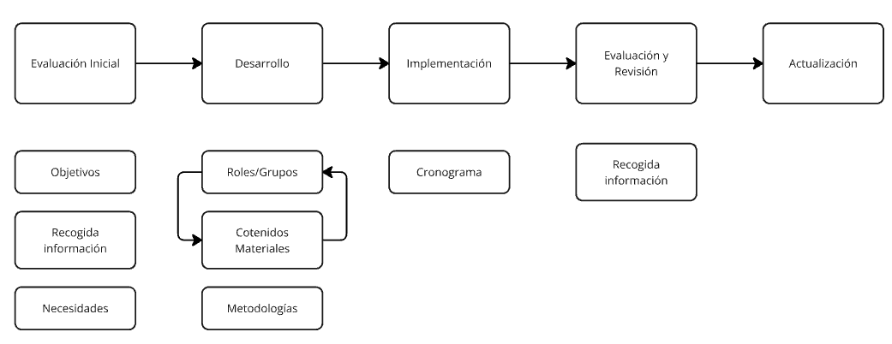

1.4.-Concienciación y formación
4.1. Plan de Formación y Concienciación en Ciberseguridad¶
La formación y concienciación complementan las medidas técnicas de seguridad, permitiendo que los empleados sean un eslabón fuerte en la protección de la organización. Todas la medidas de seguridad, como cortafuegos, antivirus o sistemas de detección de intrusos, políticas de seguridad, etc., pueden ser inútiles si los empleados no están formados y concienciados en ciberseguridad.
1. Introducción al plan de formación y concienciación¶
La ciberseguridad no solo depende de tecnologías avanzadas, sino también del personal que las utiliza. Un Plan de Formación y Concienciación busca capacitar a los empleados para prevenir, mitigar o responder a posibles amenazas que puedan afectar a la organización. Este enfoque integral permite que todos, desde técnicos hasta personal administrativo, desempeñen un papel activo en la protección de los activos digitales.
1.1. Misión del Plan de Formación y Concienciación¶
El objetivo principal del plan es crear una fuerza laboral consciente y preparada. Esto significa que cada empleado debe ser capaz de:
- Identificar amenazas potenciales, como correos de phishing o enlaces sospechosos.
- Mitigar riesgos, tomando decisiones informadas al interactuar con los sistemas corporativos.
- Responder adecuadamente en caso de un incidente, como notificar a los equipos de seguridad o desconectar dispositivos afectados.
Una organización con empleados formados y concienciados no solo mejora su postura de seguridad, sino que también reduce significativamente la posibilidad de incidentes.
1.2. Inclusividad de la formación y concienciación¶
El Plan de Formación y Concienciación debe estar diseñado para ser inclusivo y continuo
. En lo que respecta a la inclusividad, tenemos que asegurarnos que todos los niveles de la organización estén alineados en términos de seguridad.
1.2.1. Formación para todo el personal¶
La formación inicial es crucial para que todos los empleados comiencen con un conocimiento básico de seguridad. Según los roles, esta formación se divide en:
-
Formación técnica:
- Dirigida al personal especializado, como administradores de sistemas y técnicos de TI.
- Enfocada en temas como configuración segura de sistemas, gestión de vulnerabilidades y respuesta a incidentes.
- Ejemplo: Un técnico debe aprender a aplicar parches de seguridad en los sistemas críticos para prevenir exploits.
-
Formación básica:
- Diseñada para el resto del personal, enfocándose en temas como el reconocimiento de correos de phishing, uso seguro de contraseñas y manejo responsable de dispositivos corporativos.
- Ejemplo: Enseñar a los empleados a detectar correos maliciosos basándose en errores de gramática o URLs sospechosas.
1.2.2. Concienciación general para todos los empleados¶
La concienciación no requiere conocimientos técnicos avanzados, pero busca garantizar que todos los empleados comprendan la importancia de la seguridad y cómo su comportamiento puede influir en el bienestar de la organización. En difinitiva, generar una cultura de seguridad.
-
Temas clave:
- No hacer clic en enlaces o descargar archivos de correos desconocidos.
- Mantener los dispositivos bloqueados cuando no están en uso.
- Utilizar redes Wi-Fi públicas de manera segura (por ejemplo, mediante una VPN).
-
Ejemplo: Un empleado que se quiere conectar para trabajar desde la Wi-Fi de una cafetería, debería confirmar con el establecimiento el nombre de la red Wi-Fi antes de conectarse.
1.3. Continuidad de la formación y concienciación¶
En cuanto a la continuidad, la formación y la concienciación no son actividades de una sola vez. La repetición y actualización son esenciales para garantizar que el personal esté al día con las amenazas y medidas más recientes.
1.3.1. Formación técnica actualizada¶
Cada vez que se introducen cambios significativos en los sistemas de TI, se debe impartir formación específica al personal técnico.
- Motivo: Los atacantes evolucionan constantemente, por lo que el personal técnico debe conocer las nuevas configuraciones o herramientas de seguridad implementadas.
- Ejemplo: Si se instala un nuevo sistema de detección de intrusos (IDS), los técnicos deben ser formados para configurarlo, interpretar sus alertas y responder a posibles incidentes.
1.3.2. Refresco de normativas de seguridad¶
Incluso si no se producen incidentes, ni cambios tecnológicos, es fundamental reforzar periódicamente las normativas de seguridad para todo el personal.
- Beneficio: Mantener la seguridad como una prioridad diaria y no algo que se deje en segundo plano.
- Ejemplo: Enviar recordatorios trimestrales sobre la política de uso responsable de contraseñas, junto con ejemplos de cómo crear una contraseña segura.
1.4. Ejemplo final: Un día en la vida de un empleado concienciado¶
Imaginemos a Laura, que trabaja en el departamento de Recursos Humanos. Durante su formación inicial, aprendió a identificar correos de phishing. Un día recibe un correo que parece provenir de su jefe con un archivo adjunto titulado “Salarios_2024.xlsx”. Aunque el correo tiene apariencia legítima, Laura nota que el remitente utiliza un dominio extraño. Gracias a su formación, no abre el archivo, notifica al equipo de TI y evita un ataque que podría haber comprometido datos sensibles de la empresa.
2. Criterios para el Diseño del Plan de Formación y Concienciación¶
El diseño de un Plan de Formación y Concienciación en ciberseguridad debe garantizar que todos los empleados estén capacitados y preparados para proteger los activos de la organización. Este proceso requiere establecer criterios claros en el diseño del plan, para que cada persona:
- Conozca y entienda las normativas y medidas de seguridad.
- Sea capaz de identificar comportamientos sospechosos o incidentes.
- Notifique de manera efectiva al personal especializado cualquier anomalía.
Por otra parte, el diseño debe adaptarse a las características de la organización, sus empleados y los servicios que utiliza, asegurando que sea práctico, comprensible y aplicable para todos.
2.1. Nivel de inicio¶
Antes de desarrollar los contenidos de formación, es necesario evaluar los niveles de conocimiento de los empleados para diseñar una capacitación adecuada. Esto evita que sea demasiado básica para algunos o compleja para otros, promoviendo el interés y la efectividad.
Para lograr esto, se realiza una evaluación inicial con preguntas como:
- ¿Saben reconocer un correo de phishing?
- ¿Conocen las buenas prácticas para crear contraseñas seguras?
- ¿Están familiarizados con los procedimientos para reportar un incidente?
Estas evaluaciones iniciales se pueden realizar mediante cuestionarios, pruebas de conocimiento o simulaciones de ataques, y permiten adaptar la formación a las necesidades reales de los empleados, y particularizando tanto a empleados con conocimientos básicos como a aquellos con experiencia técnica.
Por ejemplo, si en una empresa se detecta que el 70% de los empleados no sabe cómo verificar la autenticidad de un enlace en un correo, la formación inicial incluirá ejercicios prácticos como analizar correos falsos y aprender a identificar señales de phishing.
2.2. Factores clave en el diseño¶
El diseño de la formación debe considerar varios elementos que influyen en las necesidades específicas de formación de los empleados de la organización.
2.2.1. Roles existentes en la organización¶
Cada rol tiene responsabilidades y necesidades diferentes según las tareas que realiza y la información que maneja. La formación debe adaptarse para que sea relevante para cada grupo de empleados.
Por ejemplo:
- El personal técnico, como administradores de sistemas, necesitará formación avanzada en áreas como gestión de vulnerabilidades o análisis de incidentes. Un técnico aprenderá a configurar cortafuegos para bloquear ataques entrantes.
- El personal administrativo recibirá formación básica orientada a evitar errores comunes como el uso de contraseñas débiles o la apertura de archivos adjuntos sospechosos. Un empleado de oficina puede aprender cómo verificar el remitente de un correo antes de abrir un archivo adjunto.
- Los gerentes serán capacitados en la gestión de incidentes, para que sepan cómo coordinar una respuesta eficaz si ocurre una brecha de seguridad.
Es fundamental evitar el uso de jerga técnica con empleados no especializados. Por ejemplo, en lugar de explicar que “un ransomware cifra archivos utilizando un algoritmo de clave asimétrica”, se puede decir: “Un ataque ransomware bloquea tus archivos y exige un pago para desbloquearlos”.
2.2.3. Tipos de información en la organización¶
Además de contraseñas y credenciales, las organizaciones manejan diferentes tipos de información confidencial que deben protegerse, como:
- Documentos financieros, como balances o presupuestos.
- Datos de RR.HH., como nóminas y contratos de empleados.
- Información sobre salud, en caso de manejar historiales médicos o datos sensibles.
- Proyectos de infraestructuras críticas, como planos o especificaciones técnicas.
- Datos confidenciales, como estrategias de negocio o propiedad intelectual.
Por ejemplo, en un hospital, los empleados deben ser entrenados para evitar compartir información médica de los pacientes por canales no seguros, como correos sin cifrar o mensajes instantáneos.
2.2.4. Servicios disponibles en la organización¶
Los servicios que utiliza la organización también deben considerarse en el diseño de la formación. Esto incluye herramientas como:
- Páginas web corporativas: Capacitar al personal de TI en la protección contra ataques como inyecciones SQL o DDoS.
- Almacenamiento en la nube: Enseñar a los empleados cómo gestionar permisos en plataformas como Google Drive o OneDrive, asegurándose de no compartir documentos confidenciales públicamente.
- Redes sociales corporativas: Entrenar a los encargados de gestionar redes sociales para detectar intentos de suplantación de identidad o manipulación de cuentas oficiales.
Un Ejemplo sería enseñar a un empleado que gestiona las redes sociales de la empresa a reconocer mensajes maliciosos dirigidos a hackear la cuenta oficial, como correos falsos de "verificación de cuenta".
2.2.5. Políticas de la empresa¶
Las políticas internas también afectan cómo se diseña la formación. Dos aspectos clave son:
-
Trabajo presencial y remoto:
- En el caso de empleados remotos, se debe incluir formación en el uso de redes Wi-Fi seguras y herramientas como VPN para proteger las conexiones.
- Ejemplo: Un empleado que trabaja desde casa debe aprender a identificar redes Wi-Fi públicas inseguras y cómo evitar conectarse sin usar una VPN.
-
Uso de dispositivos corporativos o personales (BYOD):
- Para dispositivos personales, es importante enseñar prácticas de seguridad como mantener los sistemas actualizados y utilizar herramientas de cifrado.
- Ejemplo: Si un empleado usa su móvil para acceder al correo corporativo, debe saber configurar la autenticación de dos factores y evitar almacenar contraseñas en aplicaciones no autorizadas.
Para mas información sobre políticas de seguridad, puedes consultar el punto Política de puesto de usuario.
2.2.6. Características específicas del negocio¶
Las características propias de la organización también influyen en el diseño del plan:
-
Tamaño de la empresa:
- En organizaciones grandes, se pueden realizar capacitaciones en grupos separados por departamentos o roles.
- En empresas pequeñas, se pueden realizar talleres personalizados y más interactivos.
-
Ámbito de negocio:
- Una empresa de e-commerce necesitará priorizar la seguridad en transacciones y protección de datos de clientes, mientras que una compañía de transporte público se centrará en proteger sistemas críticos como el control de flotas.
-
Horarios y turnos de trabajo:
- Para empleados con turnos nocturnos o roles de atención 24/7, es ideal implementar capacitaciones en línea que puedan realizarse de manera flexible.
-
Ubicación y sedes:
- Empresas con oficinas en diferentes países deben ajustar la formación para cumplir con normativas locales, como el GDPR en Europa o la CCPA en EE.UU.
Por ejemplo, una empresa multinacional que opera en Europa debe capacitar a su personal sobre el manejo adecuado de datos personales según el Reglamento General de Protección de Datos (GDPR).
2.3. Ejemplo del diseño del plan¶
Imaginemos una empresa que maneja información financiera y tiene tanto personal administrativo como técnico, además de una política de trabajo híbrido. El diseño del plan incluiría:
- Evaluación inicial: Una encuesta para identificar el conocimiento actual del personal, detectando que la mayoría tiene problemas para identificar correos de phishing.
-
Formación por roles:
- El equipo técnico recibe capacitación sobre cómo gestionar actualizaciones y proteger servidores.
- El equipo administrativo aprende a manejar documentos financieros de manera segura y a reconocer intentos de phishing.
-
Políticas de trabajo híbrido: Se les enseña a los empleados remotos a usar VPN, evitar redes Wi-Fi públicas y almacenar información en plataformas corporativas seguras.
- Adaptación a horarios: Se ofrecen talleres en línea para que los empleados con turnos nocturnos puedan acceder a la formación en horarios flexibles.
- Actualización continua: Cada seis meses, se realizan simulacros de phishing para evaluar si los empleados aplican lo aprendido y refrescar los contenidos.
Con estos criterios, el diseño del plan será inclusivo, continuo, efectivo y orientado a las necesidades reales de la organización y su personal.
3. Contenidos de la Formación¶
La formación en ciberseguridad debe partir de los conocimientos previos de los empleados para asegurar que todos comprendan los conceptos básicos antes de profundizar en aspectos más avanzados. Esto permite adaptar la capacitación a los niveles de experiencia detectados durante la evaluación inicial y mantenerla relevante y efectiva.
3.1. Conceptos básicos¶
La formación comenzará con temas esenciales que son comunes a todos los empleados, independientemente de su rol. Estos contenidos se centran en comportamientos seguros y buenas prácticas que reducen los riesgos de seguridad en la organización. Algunos temas a trabajar son:
3.1.1. Uso de contraseñas y sistemas de verificación¶
- Objetivo: Enseñar a los empleados a crear y gestionar contraseñas seguras y a utilizar sistemas de autenticación de múltiples factores (MFA).
- Ejemplo: Aprender a generar una contraseña usando las iniciales de una frase, como “Me gusta el café con leche” → MgECCL2024!.
- Consejo: Introducir administradores de contraseñas para evitar contraseñas repetidas o débiles.
3.1.2. Reconocimiento de phishing¶
- Objetivo: Capacitar a los empleados para identificar correos electrónicos y mensajes sospechosos que intenten robar información confidencial.
- Ejemplo: Presentar simulacros de correos de phishing con errores comunes, como un dominio falso (empresaa.com en lugar de empresa.com).
- Consejo: Enfatizar la importancia de no hacer clic en enlaces o descargar archivos de remitentes desconocidos.
3.1.3. Peligros de descargas y uso de software no autorizado¶
- Objetivo: Concienciar sobre los riesgos de instalar software no aprobado, que podría contener malware o comprometer la seguridad de la red.
- Ejemplo: Mostrar casos reales donde programas descargados de sitios no oficiales infectaron sistemas empresariales.
3.1.4. Uso apropiado de internet¶
- Objetivo: Establecer normas para navegar de manera segura y evitar visitar sitios web sospechosos o inapropiados.
- Ejemplo: Enseñar a verificar certificados de seguridad en páginas web para compras en línea o transferencias bancarias.
3.1.5. Ingeniería social¶
- Objetivo: Detectar y prevenir intentos de manipulación psicológica diseñados para obtener información confidencial.
- Ejemplo: Relatar un escenario donde una llamada telefónica pretende ser del soporte técnico para obtener credenciales.
3.1.6. Uso de dispositivos de almacenamiento externos¶
- Objetivo: Capacitar sobre los riesgos de conectar dispositivos externos no verificados, como pendrives, a los sistemas corporativos.
- Ejemplo: Explicar cómo un USB infectado podría contener un malware capaz de robar información.
3.1.7. Políticas de trabajo remoto¶
- Objetivo: Enseñar prácticas seguras para trabajar desde casa o en ubicaciones externas.
- Ejemplo: Mostrar cómo usar una VPN para proteger las conexiones a la red corporativa.
3.1.8. Uso de redes inalámbricas¶
- Objetivo: Prevenir conexiones inseguras a redes Wi-Fi públicas.
- Ejemplo: Enseñar a verificar el nombre del punto de acceso con el establecimiento antes de conectarse.
3.1.9. Actualización del software¶
- Objetivo: Fomentar la instalación de actualizaciones y parches para reducir vulnerabilidades en sistemas y aplicaciones.
- Ejemplo: Explicar cómo un sistema desactualizado puede ser vulnerable a exploits conocidos, como ocurrió en el caso del ransomware WannaCry.
3.1.10. Copias de seguridad¶
- Objetivo: Capacitar sobre la importancia de realizar copias de seguridad regularmente para proteger la información ante incidentes.
- Ejemplo: Mostrar cómo una copia de seguridad bien hecha puede salvar datos tras un ataque de ransomware.
3.1.11. Notificación de incidentes¶
- Objetivo: Establecer procedimientos claros para reportar incidentes de seguridad.
- Ejemplo: Instruir a los empleados sobre cómo contactar al equipo de TI si detectan un correo malicioso o actividad sospechosa.
3.1.12. Leyes y normativas (RGPD, LOPD GDD)¶
- Objetivo: Proporcionar una visión general de las leyes de protección de datos relevantes para la organización.
- Ejemplo: Explicar cómo manejar datos personales de acuerdo con el RGPD, como obtener el consentimiento explícito antes de recopilar información de clientes.
3.1.13. Políticas de “mesa limpia”¶
- Objetivo: Promover el hábito de mantener los escritorios y estaciones de trabajo libres de documentos o dispositivos confidenciales cuando no estén en uso.
- Ejemplo: Enseñar a guardar contratos, informes u otros materiales sensibles en armarios cerrados al final de la jornada laboral.
3.2. Personalización y profundización¶
A medida que los empleados dominen los conceptos básicos, la formación podrá incluir contenidos más avanzados basados en sus roles o departamentos.
Por ejemplo: - Equipo de TI: Profundización en análisis forense, gestión de firewalls y detección de intrusos. - RR.HH.: Manejo de datos personales de empleados según el RGPD. - Finanzas: Identificación de fraudes en transferencias bancarias y medidas para proteger sistemas de pago.
3.3. Ejemplo de capacitación¶
Escenario 1: Se realiza una sesión de formación donde los empleados reciben ejemplos de correos de phishing reales. Aprenden a identificar señales sospechosas, como direcciones de remitente inusuales o errores gramaticales. Después, los empleados participan en un simulacro donde deben responder si un correo es legítimo o fraudulento.
Escenario 2: En una capacitación sobre dispositivos de almacenamiento externos, se entrega a cada participante un USB ficticio con etiquetas llamativas como “Confidencial – Nóminas”. Se simula cómo un empleado curioso podría introducirlo en un ordenador, y se explica el riesgo de esta acción.
Con esta estructura, la formación será práctica, accesible y efectiva para crear una cultura de seguridad sólida dentro de la organización.
4. Elaboración del Plan de Formación y Concienciación¶

La elaboración de un Plan de Formación y Concienciación es el primer paso hacia la creación de una cultura de ciberseguridad en la organización. Este proceso debe ser estratégico, considerando los objetivos generales, las necesidades específicas de formación y la variedad de roles dentro de la empresa.
4.1. Objetivos del Plan¶
El principal objetivo del plan es fomentar una cultura de ciberseguridad, es decir, lograr que los empleados no solo sigan políticas de seguridad, sino concienciar, es decir, que entiendan y valoren su importancia. Esto ayuda a minimizar el riesgo de incidentes y fortalece la protección de los activos corporativos.
Objetivos específicos:
-
Proteger los datos corporativos: Reducir la exposición de información sensible a amenazas internas y externas.
- Ejemplo: Asegurar que los empleados sepan cifrar documentos antes de compartirlos externamente.
-
Promover prácticas seguras: Enseñar hábitos cotidianos que reduzcan riesgos, como el uso de contraseñas robustas y la identificación de correos maliciosos.
- Ejemplo: Realizar un taller práctico para que cada empleado configure autenticación de dos factores (2FA) en sus cuentas laborales.
-
Concienciar sobre amenazas potenciales: Hacer que los empleados sean capaces de reconocer tácticas de ingeniería social, intentos de phishing y otras amenazas.
- Ejemplo: Mostrar ejemplos reales de ataques a empresas similares para enfatizar los riesgos.
Un plan con estos objetivos no solo refuerza la seguridad, sino que también crea empleados más conscientes y responsables.
Resultado esperado: Los objetivos claros y medibles que guíen el diseño y la implementación del plan, asegurando que cada actividad formativa contribuya a la seguridad de la organización.
- Objetivo centrados en la protección de los datos corporativos, promover prácticas seguras y concienciar sobre amenazas potenciales.
4.2. Evaluación de las Necesidades de Formación¶
Antes de diseñar los contenidos y estrategias formativas, como ya comentamos anteriormente, es imprescindible realizar una evaluación inicial que permita identificar:
- Áreas de debilidad: ¿Dónde existen brechas en el conocimiento o la práctica de la ciberseguridad?
- Recursos necesarios: ¿Qué materiales, herramientas o tiempo se requieren para abordar estas debilidades?
Los pasos para la evaluación:
-
Realizar encuestas y pruebas de conocimiento:
- Aplicar cuestionarios para medir el nivel de comprensión sobre temas clave, como phishing o uso de contraseñas.
- Ejemplo: Una encuesta revela que solo el 40% de los empleados sabe cómo verificar un enlace en un correo electrónico.
-
Entrevistas con líderes de equipos y responsables técnicos:
- Recopilar información sobre incidentes pasados o puntos críticos en la seguridad de cada departamento.
- Ejemplo: El equipo de TI reporta que muchos empleados no actualizan sus sistemas, lo que expone la organización a vulnerabilidades conocidas.
-
Simulaciones de ataques:
- Realizar pruebas prácticas, como una campaña de phishing simulada, para medir el comportamiento real de los empleados frente a amenazas.
- Ejemplo: Enviar un correo simulado con un enlace sospechoso y registrar cuántos empleados hacen clic en él.
Resultado esperado: Una evaluación inicial, que nos proporcionará datos concretos para:
- Una lista de debilidades, que nos permitirá contenidos enfocados en las áreas de mayor riesgo. Ej:
- Una priorización sobre áreas críticas, como la capacitación en la identificación de amenazas comunes o la protección de datos sensibles.
- La identificación de recursos necesarios, como herramientas de formación, tiempo de los empleados y apoyo de los líderes de equipo.
4.3. Roles Incluidos en el Plan de Formación y Concienciación¶
Cada empleado tiene un papel importante en la seguridad de la organización. Por ello, el plan debe segmentar los contenidos y estrategias según los roles, departamentos y características específicas de los empleados.
4.3.1. Inclusión por roles y departamentos¶
-
Empleados técnicos:
- Requieren formación avanzada en áreas como gestión de vulnerabilidades, configuración de firewalls, y respuesta a incidentes.
- Ejemplo: Un administrador de sistemas debe aprender a aplicar parches de seguridad en servidores críticos de manera eficiente y sin afectar la operación.
-
Personal administrativo:
- Necesitan formación básica en el manejo seguro de datos, como evitar compartir información sensible por correo no cifrado.
- Ejemplo: Un empleado de RR.HH. aprende a proteger datos de nóminas utilizando contraseñas cifradas para archivos adjuntos.
-
Gerentes y líderes:
- Deben ser capacitados en la toma de decisiones en caso de incidentes y en la supervisión del cumplimiento de políticas.
- Ejemplo: Un gerente debe saber cómo coordinar con el equipo de TI si se detecta un ataque de ransomware.
-
Empleados con trabajo remoto:
- Formación específica en el uso de redes Wi-Fi seguras y herramientas como VPN.
- Ejemplo: Un comercial remoto aprende a identificar redes Wi-Fi públicas falsas que podrían ser utilizadas para interceptar su tráfico.
4.3.2. Adaptación por características logísticas¶
La segmentación del plan también debe considerar factores como:
- Geografía: Formación adaptada a normativas locales, como el RGPD en Europa o la CCPA en EE.UU.
- Horarios y turnos: Asegurarse de que los empleados en diferentes horarios puedan acceder a las formaciones, ya sea en vivo o grabadas.
Ejemplo: Un comercial remoto en otra zona horaria recibe formación asincrónica sobre prácticas de seguridad al usar dispositivos móviles en viajes internacionales.
4.3.3. Subdivisión de grupos según necesidades específicas¶
La subdivisión puede hacerse para personalizar los contenidos según el nivel de exposición a riesgos o las responsabilidades del rol. Ejemplo:
- Grupo 1: Técnicos que manejan sistemas críticos → Formación sobre detección de intrusiones.
- Grupo 2: Empleados administrativos → Talleres sobre phishing e ingeniería social.
Al estructurar el plan de esta manera, se asegura que todos los empleados reciban la capacitación que realmente necesitan para su función, maximizando la efectividad del programa.
Resultado esperado: El conjunto de de los roles y características de los empleados, características logísticas y necesidades específicas, que nos permitirán identificar los grupos de empleados que requieren formación y concienciación específica, adaptada a sus responsabilidades y riesgos:
- Los diferentes roles y departamentos de la organización, incluyendo técnicos, administrativos, gerentes y empleados remotos.
- Las características logísticas, como la geografía, los horarios y los turnos de trabajo.
- La subdivisión de grupos según necesidades específicas, como la exposición a riesgos o las responsabilidades del rol.
4.4. Contenidos del Plan¶
Los contenidos del Plan de Formación y Concienciación deben ser relevantes, prácticos y adaptados a las necesidades de la organización. El propósito es involucrar a los empleados, garantizar que comprendan la situación actual en materia de seguridad y enseñarles cómo proteger los activos y servicios de la empresa frente a amenazas cibernéticas.
Los tipos de contenidos pueden variar según los objetivos del plan y los roles de los empleados, pero es fundamental que sean claros, comprensibles y aplicables a la vida laboral diaria. Estos contenidos versarán sobre:
-
Involucrar y notificar: Explicar de manera clara y directa cuál es la situación de la organización en términos de seguridad, destacando incidentes pasados, vulnerabilidades conocidas o tendencias de amenazas actuales.
- Ejemplo: Mostrar un caso donde la empresa sufrió una brecha de datos debido a un correo de phishing.
-
Formar y concienciar sobre amenazas: Proveer información sobre las amenazas más relevantes, como phishing, ransomware, ataques por ingeniería social o malware.
- Ejemplo: Simular un correo que intenta obtener credenciales para demostrar cómo los ciberdelincuentes engañan a las víctimas.
-
Relacionados con políticas corporativas: Detallar las normativas internas que los empleados deben cumplir, como el uso de contraseñas, políticas de mesa limpia o la prohibición de instalar software no autorizado.
- Ejemplo: Explicar la política de actualización de software, mostrando cómo un sistema sin parches puede ser explotado.
-
Protección de activos y servicios: Enseñar cómo proteger datos y sistemas específicos de la organización, como documentos financieros, datos de clientes o sistemas críticos.
- Ejemplo: Capacitar al equipo financiero en la validación de transferencias electrónicas para evitar fraudes.
Resultado esperado: Una lista de los contenidos que permitan a los empleados comprender la situación actual de la organización en materia de seguridad, las amenazas más relevantes, las políticas corporativas y cómo proteger los activos y servicios de la empresa frente a amenazas cibernéticas:
- Información de la organización sobre incidentes pasados, vulnerabilidades conocidas y tendencias de amenazas actuales.
- Amenazas más relevantes, como phishing, ransomware, ingeniería social y malware, en función de la evaluación de necesidades, y las amenazas más comunes en la organización.
- Formación sobre normativas internas, como el uso de contraseñas, políticas de mesa limpia y prohibición de software no autorizado.
- Formación específica sobre la protección de activos y servicios críticos, como documentos financieros, datos de clientes o sistemas clave.
4.5. Asociación de Roles y Contenidos¶
La efectividad del plan depende de su capacidad para adaptarse a las necesidades de cada rol en la organización. Esto implica asociar/adaptar los contenidos a los grupos de empleados según sus responsabilidades, niveles de conocimiento y riesgos específicos.
4.5.1. Criterios de diseño¶
-
Adaptación por rol: Los contenidos deben ser relevantes para las tareas y riesgos de cada grupo.
Ejemplo:
- Empleados en general: Phishing, ingeniería social, uso básico de contraseñas.
- Técnicos: Gestión de firewalls, análisis de vulnerabilidades, respuesta a incidentes.
-
Lenguaje y ejemplos claros: Usar un lenguaje comprensible para cada grupo, evitando jerga técnica innecesaria con empleados no técnicos.
Ejemplo: Explicar a los empleados administrativos que "ransomware bloquea tus archivos hasta que se paga un rescate", en lugar de usar términos técnicos como "cifrado simétrico".
-
Escenarios específicos: Presentar situaciones prácticas relacionadas con el entorno laboral.
Ejemplo: Para el equipo comercial remoto, simular un intento de suplantación de identidad mientras usan una red Wi-Fi pública.
4.5.2. Ejemplo de asociación/ adaptación de contenidos¶
| Rol/Grupo | Contenidos clave | Ejemplo |
|---|---|---|
| Administrativos | Phishing, políticas de mesa limpia | Identificar errores en un correo sospechoso o simular cierre de sesión diaria. |
| Técnicos | Configuración segura, respuesta a incidentes | Taller práctico para configurar firewalls o analizar alertas de un IDS. |
| Comerciales remotos | Uso seguro de redes Wi-Fi | Mostrar cómo verificar un punto de acceso antes de conectarse. |
| Gerentes | Gestión de incidentes | Simulación de toma de decisiones frente a un ransomware que afecta datos clave. |
Resultado esperado: Los contenidos asociados/adaptados a las necesidades de cada grupo de empleados, garantizando que la formación sea relevante, efectiva y aplicable a su entorno laboral específico
- Contenidos clave para cada grupo de empleados, como phishing, políticas de mesa limpia, configuración segura, respuesta a incidentes, uso seguro de redes Wi-Fi y gestión de incidentes.
- Adaptando la formación a las necesidades de cada grupo (lenguaje, conocimiento, rol) y garantizando su relevancia y efectividad.
- Ejemplos prácticos específicos para cada grupo, como identificar errores en un correo sospechoso, configurar firewalls, verificar un punto de acceso o tomar decisiones frente a un ransomware.
4.6. Metodologías Formativas¶
Para alcanzar los objetivos del plan, las estrategias formativas deben ser viables, dinámicas y adaptadas a las características de la organización. La clave es combinar diferentes metodologías para maximizar el impacto y garantizar que todos los empleados participen activamente.
4.6.1. Estrategias formativas¶
-
División por grupos o subgrupos:
- Separar a los empleados en grupos según sus roles, horarios o ubicaciones para personalizar las sesiones.
- Ejemplo: Un equipo técnico recibe formación presencial sobre gestión de vulnerabilidades, mientras los empleados administrativos acceden a un módulo online sobre phishing.
-
Variedad de materiales: (Ver el punto 5)
- Infografías: Resúmenes visuales de conceptos clave, como uso de contraseñas seguras o detección de phishing.
- Manuales: Guías detalladas sobre procedimientos de seguridad, como respuesta a incidentes o configuración de redes.
- Simulaciones: Pruebas prácticas de ataques, como phishing o ransomware, para evaluar la respuesta de los empleados.
- Módulos online: Cursos interactivos que permitan a los empleados aprender a su propio ritmo y en cualquier momento.
- Estudios de caso: Análisis de incidentes reales o simulados para que los empleados aprendan de experiencias pasadas.
-
Variedad de metodologías:
- Jornadas presenciales o virtuales: Sesiones interactivas que incluyan preguntas, ejemplos y ejercicios prácticos.
- Correos educativos: Mensajes regulares con consejos prácticos y recordatorios.
- Simulacros: Realizar campañas de phishing simuladas o simulaciones de ataques de ransomware.
- Materiales de apoyo: Guías, infografías y vídeos que refuercen los conceptos.
-
Calendario de implementación:
- Establecer una periodicidad para las formaciones (mensual, trimestral o anual).
- Ejemplo:
- Enero: Taller práctico de phishing para empleados generales.
- Marzo: Simulación de ransomware para técnicos.
- Junio: Evaluación general y retroalimentación.
4.6.2. Ejemplo de planificación¶
| Roles/Grupo | Contenidos | Materiales | Metodologías | Calendario |
|---|---|---|---|---|
| Administrativos | Uso de contraseñas seguras, phishing | Infografías, simulaciones | Taller interactivo | Enero, Julio |
| Técnicos | Respuesta a incidentes, VPN | Manuales, laboratorios prácticos | Simulación técnica | Marzo, Septiembre |
| Comerciales remotos | Redes Wi-Fi seguras, 2FA | Guías digitales, ejemplos prácticos | Módulo online | Febrero, Agosto |
| Gerentes | Gestión de incidentes, supervisión | Estudios de caso | Simulación de decisión | Abril, Octubre |
Resultado esperado: Una personalización de la formación a los distintos grupos de empleados, con una variedad de metodologías y un calendario de implementación que garantice la efectividad y el impacto del plan. Por cada contenidos clave y grupo:
- Materiales de apoyo, como infografías, simulaciones, manuales, laboratorios prácticos, guías digitales y ejemplos prácticos.
- Metodologías formativas variadas, como talleres interactivos, simulaciones, módulos online, estudios de caso y simulaciones de decisión.
- Calendario de implementación con sesiones mensuales, trimestrales o semestrales, adaptado a las necesidades de cada grupo de empleados.
4.7. Evaluación y actualización del Plan de Concienciación¶
El Plan de Formación y Concienciación debe ser dinámico y evolutivo, adaptándose a los cambios en el entorno de amenazas y a las necesidades internas de la organización. Para asegurar su efectividad, es fundamental evaluar el plan y ajustarlo según los resultados obtenidos.
La evaluación del Plan de Formación y Concienciación es fundamental para medir su impacto, identificar áreas de mejora y asegurar que los objetivos de seguridad se estén alcanzando. Una evaluación bien diseñada permite ajustar el plan, teniendo presente los resultados obtenidos, las necesidades cambiantes de la organización y las amenazas emergentes. Para mas información sobre la evaluación del plan, ver el punto 6.
4.7.1. Objetivos de la Evaluación¶
La evaluación del plan tiene varios objetivos:
- Comprobar resultados: Verificar si los empleados han adquirido los conocimientos y habilidades necesarios para prevenir y responder a incidentes de seguridad.
- Identificar brechas: Detectar grupos o áreas que requieran formación adicional o refuerzo específico.
- Actualizar el plan: Adaptar los contenidos y metodologías según los resultados de la evaluación y las nuevas necesidades de seguridad.
4.7.2. Métodos de Evaluación¶
La evaluación puede realizarse a través de diferentes métodos, como:
-
Pruebas de conocimiento: Cuestionarios diseñados para medir la comprensión de los conceptos clave.
Ejemplo: Una prueba que evalúe si los empleados pueden identificar características de un correo de phishing.
-
Encuestas de opinión: Solicitar retroalimentación sobre la calidad, relevancia y utilidad de la formación.
Ejemplo: Preguntar si los empleados se sienten más preparados para reconocer amenazas después de la capacitación.
-
Simulaciones prácticas: Realizar simulacros de ataques, como phishing o ransomware, para evaluar el comportamiento real de los empleados.
Ejemplo: Enviar correos simulados con enlaces maliciosos para medir cuántos empleados caen en la trampa.
-
Enfoques prácticos avanzados:
- Campañas de phishing simuladas: Monitorear la cantidad de empleados que hacen clic en correos maliciosos.
- Ataques simulados: Simular una intrusión en la red para medir la respuesta del equipo técnico.
4.7.3. Mejora continua¶
Tras la evaluación, el plan debe ser actualizado para mejorar su efectividad y adaptarse a las necesidades cambiantes de la organización. La mejora continua garantiza que la formación siga siendo relevante y útil en un entorno de amenazas en constante evolución.
-
Adaptar según resultados de evaluaciones: Si un simulacro muestra que los empleados caen fácilmente en ataques de ingeniería social, se refuerza este tema en la próxima capacitación.
-
Integración de retroalimentación: Incorporar las sugerencias de los empleados para mejorar la experiencia formativa.
4.7.4. Formación de refuerzo¶
De nuevo, tras la evaluación, es importante ofrecer formación adicional adaptada a sus deficiencias a los empleados que no hayan alcanzado los objetivos esperados. Esto garantiza que todos los miembros de la organización estén alineados con las políticas de seguridad y preparados para enfrentar amenazas.
- Ejemplo: Si un empleado no puede identificar enlaces sospechosos en una prueba, participará en un taller intensivo sobre phishing.
Resultado esperado: Una evaluación del plan de formación y concienciación que permita medir su impacto, identificar áreas de mejora y ajustar los contenidos y metodologías según los resultados obtenidos:
- Los resultados a medir en función de los objetivos, como la comprensión de conceptos clave, la retroalimentación de los empleados y la efectividad de las simulaciones prácticas.
- Preguntas claves para obtener la actualización del plan, como la calidad, relevancia y utilidad de la formación.
- Preguntas claves para identificar brechas en la formación, como el cumplimiento de políticas y normativas de seguridad.
- Métodos de evaluación variados, como pruebas de conocimiento, encuestas de opinión, simulaciones prácticas, revisiones periódicas y enfoques prácticos avanzados.
- Formación de refuerzo para los empleados que no hayan alcanzado los objetivos esperados, adaptada a sus deficiencias y necesidades específicas.
4.9. Planificación y revisión periódica del Plan de Formación y Concienciación¶
Un buen plan debe ser constante y recurrente. La aplicación y revisión periódica del plan asegura que se mantenga actualizado y relevante en un entorno de amenazas en constante evolución, que la concienciación y formación no pierdan vigencia y que los empleados mantengan una postura activa frente a la seguridad.
La revisión debe incluir la incorporación de nuevas amenazas, la adaptación a cambios internos y la mejora continua de los contenidos y metodologías.
4.9.1. Frecuencia de la formación y revisión¶
La formación deben ser continuas y adaptativas, con diferentes tipos de actividades y una frecuencia de revisión que garantice la efectividad y la actualización constante del plan.
-
Formación inicial: Impartida a nuevos empleados como parte de su incorporación.
- Ejemplo: Un módulo introductorio sobre políticas de seguridad y prácticas básicas, como contraseñas seguras.
-
Refrescos regulares: Sesiones trimestrales o semestrales para reforzar conceptos clave y abordar nuevas amenazas.
- Ejemplo: Taller de actualización sobre los últimos tipos de ransomware y cómo prevenirlos.
-
Formaciones especiales: Impartidas en respuesta a cambios importantes, como una actualización masiva de sistemas o la implementación de nuevas normativas.
- Ejemplo: Capacitar a los empleados sobre cómo usar un nuevo software de cifrado implementado por la empresa.
-
Frecuencia de revisión: Realizar revisiones tras cada ejecución regular, para asegurar que los contenidos y metodologías sigan siendo relevantes.
- Ejemplo: Tras la evaluación de una formación regular, revisar los resultados y ajustar el plan según las necesidades identificadas.
-
Incorporación de nuevas amenazas: Actualizar el plan para incluir temas emergentes, es responsabilidad de la organización mantenerse al día con las últimas tendencias en ciberseguridad.
- Ejemplo: Introducir formación sobre cómo detectar vídeos falsificados que intenten manipular decisiones empresariales.
4.9.2. Continuidad en la concienciación¶
La concienciación en ciberseguridad debe ser un proceso continuo y constante, no un evento puntual. La organización debe mantener la ciberseguridad presente en el día a día de los empleados, reforzando los conceptos clave y fomentando una cultura de seguridad.
-
Campañas informativas: Correos electrónicos, infografías y alertas periódicas para mantener la ciberseguridad presente en el día a día de los empleados.
- Ejemplo: Enviar un correo semanal con consejos de seguridad y recordatorios sobre políticas internas.
-
Gamificación y competencias: Organizar concursos para reforzar conceptos de seguridad de manera divertida.
- Ejemplo: Una competencia donde los empleados ganen puntos por identificar correos de phishing en simulaciones.
Con estos pasos, la evaluación, actualización y aplicación periódica del plan se convierten en un ciclo continuo que refuerza la postura de seguridad de la organización y mejora su resiliencia frente a amenazas.
Resultado esperado: Una planificación periódica de ejecución del plan de formación y concienciación y de revisión de este, que garantice la continuidad y efectividad de las actividades formativas:
- Temporización de ejecución del Plan de formación regular para mantener a los empleados actualizados sobre las últimas tendencias en ciberseguridad y cómo detectar nuevas amenazas.
- Temporización del Plan de concienciación con campañas informativas, gamificación y competencias para mantener la ciberseguridad presente en el día a día de los empleados.
- Plan de formación inicial para nuevos empleados, refrescos regulares trimestrales o semestrales, formaciones especiales en respuesta a cambios importantes y revisiones periódicas para ajustar el plan según las necesidades identificadas.
- Frecuencia de revisión de plan e inclusión de nuevas amenazas, para asegurar que los contenidos y metodologías sigan siendo relevantes y que asi garantice la efectividad y la adaptabilidad del plan de formación y concienciación.
5. Tipos de Materiales para la Formación y Concienciación¶
La efectividad de un Plan de Formación y Concienciación depende en gran medida de los materiales utilizados para transmitir los contenidos. Estos materiales deben ser atractivos, claros y prácticos, adaptándose a las necesidades y perfiles de los empleados. Además, deben basarse en información actualizada sobre las amenazas cibernéticas y los contenidos previstos en el plan.
A continuación, se describen los tipos de materiales más comunes y su utilidad dentro del proceso formativo.
5.1. Pósteres y Carteles¶
Los pósteres son ideales para comunicaciones rápidas y visuales. Sus mensajes breves y diseños llamativos captan la atención de los empleados y refuerzan conceptos clave de seguridad.
-
Características esenciales:
- Un título breve y atractivo.
- Imágenes impactantes que refuercen el mensaje.
-
Ejemplo: Un cartel en la sala común con el mensaje “¡No caigas en el anzuelo! Aprende a identificar correos de phishing” acompañado de ejemplos visuales.
5.2. Presentaciones Multimedia¶
Las presentaciones son herramientas útiles para profundizar en temas específicos durante jornadas de formación o reuniones.
-
Características esenciales:
- Incluyen diapositivas dinámicas con gráficos y ejemplos.
- Ideales para acompañar sesiones presenciales o virtuales.
-
Ejemplo: Una presentación para una jornada formativa sobre ingeniería social que incluya vídeos breves mostrando intentos de manipulación realista.
5.3. Trípticos¶
Los trípticos combinan la atracción visual de un póster con la capacidad de resumir información clave en su interior. Son versátiles y fáciles de distribuir.
-
Características esenciales:
- Portada llamativa para captar la atención.
- Información resumida y clara en su interior, como consejos o pasos para reconocer amenazas.
- Contraportada con datos de contacto o recursos adicionales.
-
Ejemplo: Un tríptico titulado “10 pasos para mantener tus datos seguros” que se entregue a los empleados durante su incorporación.
5.4. Ataques Simulados de Malware¶
Estas simulaciones permiten que los empleados experimenten cómo sería un ataque real y aprendan a responder de manera segura.
-
Características esenciales:
- Uso de entornos controlados para realizar simulaciones seguras.
- Métodos variados para replicar ataques comunes, como infecciones por USB o descargas sospechosas.
-
Ejemplo: Dejar un USB con etiquetas llamativas como “Confidencial – Nóminas” en un espacio común y observar cuántos empleados lo conectan sin verificar su procedencia.
5.5. Campañas de Simulación de Phishing¶
Las simulaciones de phishing son una de las herramientas más efectivas para evaluar y reforzar la capacidad de los empleados para reconocer correos maliciosos. Existen herramientas para realizar este tipo de simulacros.
-
Características esenciales:
- Envío de correos simulados que imitan tácticas reales de phishing.
- Análisis de las respuestas para identificar empleados que necesitan refuerzo.
-
Ejemplo: Enviar un correo con el asunto “Actualización urgente de contraseña” y analizar cuántos empleados intentan acceder al enlace proporcionado.
5.6. Otros Materiales Complementarios¶
-
Vídeos y salvapantallas: Material audiovisual que refuerza conceptos clave de manera breve y visual.
- Ejemplo: Un vídeo corto que explica cómo detectar un ataque de ransomware.
-
Plataformas de entrenamiento: Portales interactivos, gratuitos o de pago, que permiten a los empleados practicar en simulaciones de amenazas.
- Ejemplo: Un curso en línea sobre “Cómo protegerse frente al malware” con ejercicios interactivos.
-
Boletines informativos: Resúmenes periódicos con actualizaciones sobre nuevas amenazas y consejos prácticos.
- Ejemplo: Un boletín mensual que detalla los ataques más comunes detectados recientemente por INCIBE.
5.7. Encuestas de Satisfacción (Se hablará más en el punto 6)¶
Las encuestas son una herramienta valiosa para recopilar opiniones y sugerencias de los empleados sobre el plan de formación.
-
Características esenciales:
- Preguntas claras y directas sobre la utilidad de la formación.
- Espacios para comentarios o recomendaciones.
-
Ejemplo: Una encuesta posterior a una jornada de formación preguntando: “¿Te sientes más preparado para reconocer un ataque de phishing después de la capacitación?”
5.8. Distribución de Materiales¶
Los materiales deben llegar a los empleados a través de canales accesibles y efectivos:
- Correo electrónico: Ideal para boletines, trípticos digitales y encuestas.
- Intranet corporativa: Publicación de presentaciones y vídeos para acceso continuo.
- Espacios comunes: Carteles, pósteres y salvapantallas.
- Talleres presenciales o virtuales: Presentaciones multimedia y simulaciones prácticas.
Ejemplo: Publicar un cartel sobre el uso de contraseñas seguras en las salas de descanso y enviar un boletín con ejemplos de contraseñas robustas por correo electrónico.
5.9. Recursos para Autoaprendizaje¶
Dado que la ciberseguridad también se aplica al ámbito personal, es útil ofrecer a los empleados recursos para autoaprendizaje:
- Cursos sobre ciberseguridad personal.
- Guías para navegar de forma segura desde casa.
- Enlaces a plataformas de entrenamiento en línea.
Ejemplo: Compartir un curso gratuito sobre protección de dispositivos personales para que los empleados refuercen su seguridad fuera del trabajo.
5.10. Fuentes y Recursos para Acceder a los Materiales¶
Los materiales para el Plan de Formación y Concienciación pueden obtenerse de diversas fuentes confiables, que proporcionan contenidos actualizados, adaptables y orientados a la sensibilización en ciberseguridad. Estas fuentes incluyen organismos especializados, plataformas de formación y recursos internos.
5.10.1. Fuentes Oficiales¶
-
INCIBE (Instituto Nacional de Ciberseguridad): El kit de concienciación de INCIBE incluye carteles, trípticos, vídeos y campañas de simulación de ataques.
- Página web de INCIBE: https://www.incibe.es
- Recursos gratuitos para empresas, disponibles en la sección “Concienciación”.
-
ENISA (European Union Agency for Cybersecurity): ENISA ofrece pósteres, ilustraciones, guías y plataformas de formación para fomentar la ciberseguridad en las organizaciones.
- Página oficial de ENISA: https://www.enisa.europa.eu
- Sección de materiales educativos y guías prácticas.
5.10.2. Plataformas de Entrenamiento¶
-
Plataformas de formación en ciberseguridad:
- Hay recursos tanto gratuitos como de pago, diseñados para capacitar a empleados en simulaciones prácticas y temas específicos.
- Ejemplo: Plataformas como Cyber Awareness Platform, KnowBe4, o plataformas de e-learning como Coursera y Udemy.
-
Recursos interactivos gratuitos:
- Desafíos en línea como CyberSecChallenge (INCIBE) o Cybersecurity Labs de la Universidad de Stanford.
5.10.3. Recursos Internos¶
-
Documentación propia:
- Revisar políticas y guías internas de la organización para generar contenidos personalizados.
- Ejemplo: Crear trípticos con ejemplos reales de incidentes que hayan ocurrido dentro de la empresa, destacando cómo se solucionaron y qué se aprendió.
-
Intranet corporativa:
- Publicar boletines y materiales formativos en un espacio accesible para todos los empleados.
- Dónde encontrarlo: A través del portal interno de la empresa.
5.10.4. Boletines y Actualizaciones¶
- INCIBE: Publica boletines periódicos sobre amenazas emergentes y buenas prácticas.
- ENISA: Emite informes y alertas sobre tendencias en ciberseguridad en la Unión Europea.
- CISA y NCSC: Ofrecen actualizaciones constantes sobre tácticas y técnicas de los ciberdelincuentes.
Dónde suscribirse: En los sitios web de cada institución, se pueden configurar alertas por correo electrónico para mantenerse informado.
6. Auditorías Internas de Cumplimiento en Materia de Prevención¶
La realización de auditorías internas es un componente esencial en la estrategia de ciberseguridad de cualquier organización. Estas auditorías permiten evaluar periódicamente la eficacia de las medidas implementadas, comprobar el cumplimiento de normativas legales y determinar si los empleados están aplicando lo aprendido durante la formación y concienciación.
6.1. Objetivos de las Auditorías¶
- Medir la efectividad del plan de formación y concienciación: Identificar si los empleados han adoptado prácticas seguras y si los contenidos formativos están dando resultados.
- Evaluar las medidas de seguridad implementadas: Verificar que las tecnologías, políticas y procedimientos están funcionando según lo previsto.
- Comprobar el cumplimiento normativo: Asegurarse de que la organización cumple con regulaciones como el RGPD o la Ley Orgánica 3/2018 de Protección de Datos y Garantía de los Derechos Digitales (LOPD GDD).
Ejemplo: Una auditoría detecta que un porcentaje significativo de empleados utiliza contraseñas débiles, lo que puede llevar a reforzar la formación en este aspecto y actualizar la política de contraseñas.
6.2. Métricas e Indicadores de Logro¶
Para evaluar el éxito del plan y las medidas de ciberseguridad, es fundamental establecer indicadores de rendimiento clave (KPIs). Estas métricas permiten medir resultados cuantitativos y cualitativos.
-
Indicadores relacionados con los empleados:
- Número de denuncias sobre posibles incidentes: Aumentos pueden indicar mayor concienciación.
- Tasa de participación en jornadas y cursos: Baja participación podría señalar la necesidad de mejorar la motivación o accesibilidad.
- Resultados de simulaciones de phishing: Si el porcentaje de empleados que caen en correos maliciosos disminuye, la formación ha sido efectiva.
Ejemplo: Si el 50% de los empleados cae en una campaña de phishing simulada, se necesita refuerzo. - Calificaciones en pruebas o certificaciones técnicas: Evaluar el nivel de conocimiento adquirido por empleados técnicos.
-
Indicadores técnicos y operativos:
- Número de reinstalaciones de sistemas por malware: Reducciones indican una mejora en la prevención.
- Comparativa de incidentes antes y después del plan: Evaluar si ha habido una disminución en ataques o brechas de seguridad.
Ejemplo: Una disminución en ataques exitosos tras la implementación del plan refleja su efectividad. - Frecuencia de clics en enlaces maliciosos: Cuantificar errores en simulaciones de phishing o incidentes reales.
-
Indicadores de cumplimiento normativo:
- Documentar los controles aplicados para cumplir con normativas como el RGPD y realizar revisiones periódicas de las políticas implementadas.
6.3. Definición de Límites y Acciones Correctivas¶
Para que las métricas sean útiles, es importante definir qué resultados se consideran satisfactorios y qué acciones se tomarán en caso de no alcanzar las metas:
-
Definición de logros esperados: Establecer límites para cada indicador, basados en las metas de seguridad y cumplimiento normativo.
- Ejemplo: Se considera satisfactorio que menos del 10% de los empleados caigan en simulaciones de phishing.
-
Acciones correctivas: Revisar el contenido del plan si los resultados no son los esperados, identificar áreas de mejora y aplicar medidas correctivas: realizar formación adicional específica para empleados que presenten debilidades.
-
Recompensas por logros alcanzados: Reconocer a los equipos o empleados que demuestren un desempeño sobresaliente.
- Ejemplo: Premiar con un reconocimiento público al equipo que mejor responda a simulaciones de ataque.
6.4. Frecuencia de las Auditorías¶
La periodicidad de las auditorías dependerá de factores como:
- Tamaño y alcance de la organización: Empresas más grandes requieren auditorías más frecuentes debido a la complejidad de sus sistemas.
- Regulaciones específicas: Cumplir con requisitos legales, como revisiones anuales exigidas por normativas de protección de datos.
- Entorno de amenazas: Un aumento en ciberataques en el sector de la empresa puede justificar auditorías más frecuentes.
Ejemplo: Una empresa mediana realiza auditorías trimestrales para comprobar el cumplimiento de su política de uso de contraseñas y simulaciones semestrales de phishing.
6.5. Beneficios de las Auditorías¶
- Reducción de incidentes: Identificar puntos débiles y solucionarlos antes de que los ciberdelincuentes los exploten.
- Cumplimiento normativo: Evitar sanciones y proteger la reputación corporativa al cumplir con leyes como el RGPD.
- Concienciación continua: Mantener a los empleados alerta y comprometidos con la seguridad de la organización.
Ejemplo: Una auditoría detecta que el 80% de los empleados ha mejorado su capacidad para identificar correos de phishing, lo que se traduce en una disminución del 50% en clics en enlaces maliciosos.
6.6. Factores a Tener en Cuenta¶
- Análisis de variables externas: No todas las mejoras en los indicadores se deben al plan; algunos cambios pueden deberse a una reducción en ciertos tipos de ataques en el sector.
- Adaptación de las auditorías al entorno: Ajustar las métricas y metodologías según las amenazas emergentes y las innovaciones en ciberseguridad.
- Colaboración interna: Involucrar a todos los departamentos en la preparación y ejecución de las auditorías.
Ejemplo: Un análisis detallado de los resultados de una auditoría revela que la disminución en clics en enlaces maliciosos se debe a una mejora en la detección de correos de phishing, lo que indica que la formación ha sido efectiva.
6.7. Conclusión¶
Las auditorías internas de cumplimiento son esenciales para garantizar la efectividad de las políticas, medidas y formaciones en ciberseguridad. Estas revisiones no solo mejoran la protección de los datos y activos de la organización, sino que también aseguran que la empresa cumpla con normativas legales y mantenga la confianza de sus clientes y empleados.
Ejemplo final: Una auditoría en una empresa de servicios detecta que el 30% de los empleados desconoce cómo reportar un incidente. Como acción correctiva, se realiza una sesión específica sobre los procedimientos de notificación, lo que mejora significativamente la tasa de reporte en la siguiente auditoría.
La evaluación y mejora continua permiten que las organizaciones enfrenten los desafíos de la ciberseguridad con mayor resiliencia y eficacia.
7. Kit de Concienciación en Ciberseguridad de INCIBE¶
Podemos implantar los mejores antivirus, cortafuegos y otras herramientas de seguridad a nuestro alcance para mejorar la ciberseguridad de nuestra empresa. Podemos establecer políticas internas para tener copias de seguridad y para configurar y administrar nuestros sistemas de forma segura. Pero, estas herramientas y políticas no serán muy útiles si los empleados no siguen una serie de buenas prácticas. Si no están atentos y no conocen qué puede pasar, podrán cometer errores que deriven en incidentes o los delincuentes encontrarán la forma de engañarlos para atacar a nuestra empresa.
Por todo esto, los empleados son siempre el eslabón más importante en la cadena de la seguridad para proteger nuestros recursos y la buena marcha de nuestro negocio. Por ello, para concienciarlos en un uso seguro de la tecnología actualizamos el kit de concienciación. Con esta herramienta podrás mejorar la ciberseguridad de tu organización desde el corazón de esta: sus empleados.
El kit de concienciación cuenta con:
- Materiales gráficos como posters, trípticos y consejos;
- 9 recursos formativos temáticos en formato texto para su lectura con apoyo de presentaciones para el aula, cada uno de ellos con un test de evaluación;
- 3 tipos distintos de ataques dirigidos para evaluar el nivel de ciberseguridad del personal de la organización, antes de realizar el plan de formación y después de haberlo concluido.
A la hora de implantar el kit de concienciación cada empresa puede hacerlo como mejor se adapte a sus necesidades. Para facilitar esta tarea se recomienda utilizar el manual diseñado para su implantación durante un año, también incluido en el kit. Este manual describe una forma práctica para utilizar los diferentes elementos del kit, además del tiempo estimado que se deberá emplear en cada uno.
7.1. Elementos del kit de concienciación¶
Las diferentes secciones por las que está formado el kit de concienciación son:
- Ataques dirigidos especialmente diseñados para evaluar el nivel de concienciación del personal en el uso del correo electrónico. El correo electrónico es el medio más utilizado por los ciberdelincuentes para realizar campañas de malware y robar información confidencial. Mediante los ataques dirigidos se simulan las campañas realizadas por los ciberdelincuentes, tanto de distribución de malware como del tipo phishing, para comprobar cuan concienciados están los empleados frente a estos ataques. Ten en cuentras que tendrás que evaluar si en tu organización, el correo electrónico es el medio más utilizado por los ciberdelincuentes para realizar campañas de malware y robar información confidencial.
- Posters con imágenes diseñadas para imprimir y ubicar en diferentes estancias de la empresa con contenido y mensaje para concienciar en aspectos concretos. Cada temática en la que se centra el kit de concienciación consta de dos tipos de posters diferentes, además de dos posters con los que dar el pistoletazo de salida a la formación.
- Trípticos que servirán para reforzar los contenidos incluidos en los diferentes recursos formativos. El objetivo de estos elementos es que sean impresos y colocados en lugares visibles de la organización para que el personal puedan acceder a su contenido de manera ágil.
-
Recursos formativos en los que consiste la formación dirigida al personal de la organización. Consta de 9 recursos formativos divididos en 6 temáticas distintas: la información, fraudes a través de correo electrónico, contraseñas, el puesto de trabajo, BYOD y teletrabajo y las redes sociales. Cada recurso formativo consta de varios elementos:
- Documento en formato PDF para su lectura o consulta con la información específica de cada temática a tratar.
- Presentación en PowerPoint con un extracto de la información de cada PDF, diseñada para facilitar su exposición en el aula.
- Consejos asociados en forma de imágenes con un texto asociado que servirán para reforzar los contenidos de cada recurso formativo vía correo electrónico, mensajes al móvil o mediante otros medios de difusión interna.
- Test de evaluación con los que el personal podrán comprobar si han asimilado los conocimientos de cada recurso y reforzar aquellos necesarios.
-
Encuesta de satisfacción. Formulario en PDF donde se evaluará cómo ha sido la implantación del kit y los diferentes recursos. La información facilitada servirá de ayuda para mejorar futuras versiones del kit de concienciación.